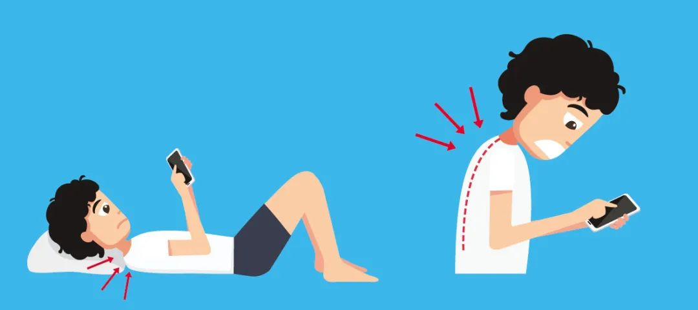
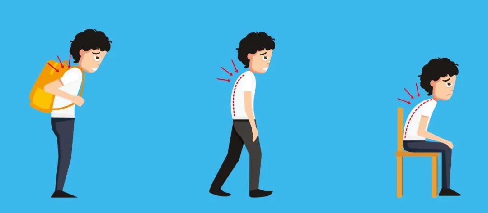
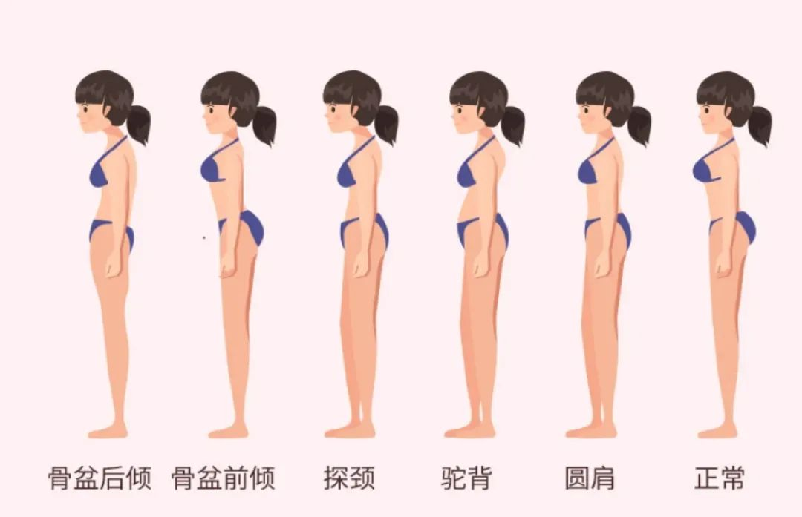

不知道大家有没有发现，有太多不自知的坏习惯在影响着我们的体态：长期维持错误的坐姿、站姿、行走姿势，手机党们很容易导致肩颈、腰背僵硬疼痛，久坐族们也会出现含胸驼背等不良体态。久而久之，你会发现你的胸部和臀部也开始变得不再挺拔。身体的活力也会慢慢下降，总是觉得很累。

长期维持错误的坐姿、站姿、行走姿势，手机党们很容易导致肩颈、腰背僵硬疼痛，久坐族们也会出现含胸驼背等不良体态。久而久之，你会发现你的胸部和臀部也开始变得不再挺拔。身体的活力也会慢慢下降，总是觉得很累。

不得不说，体态的影响真的很神奇。无关高矮胖瘦和穿衣打扮，体态好了，不仅视觉上显瘦，整个人看起来也更有气质、轻盈。